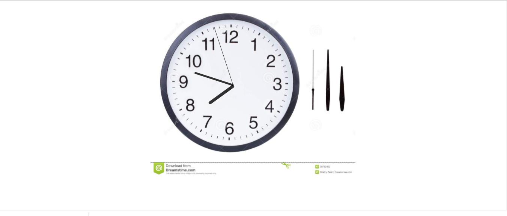

Analog Clock:-
An analogue clock is a clock or watch that has moving hands and (usually) hours marked from 1 to 12 to show you the time. Some have Roman Numerals (I, II, III, etc) instead, or no numbers at all, instead only relying on the positioning of the hands and what angle they're at to indicate the time.
Technologies:
- - JavaScript
- - CSS/CSS-3
- - HTML/HTML-5